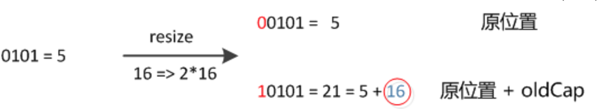
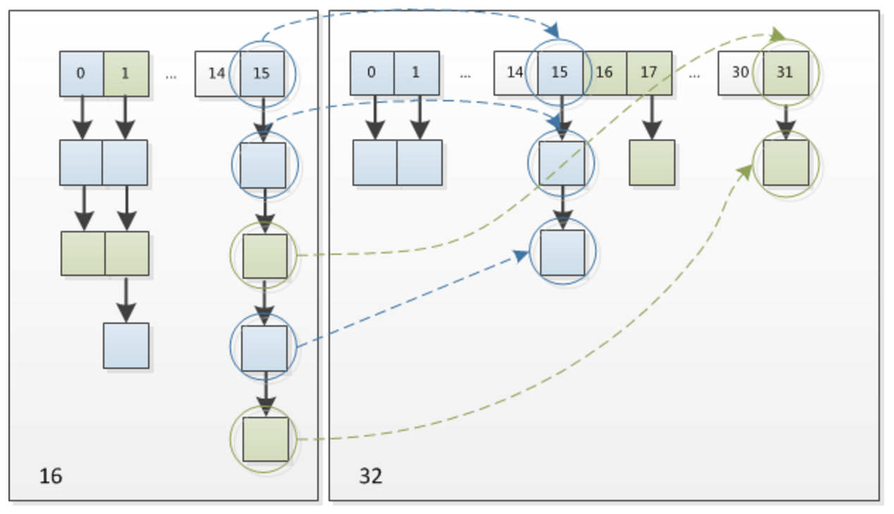

Preface
底层是数组。数组的index可以看作内存空间
数组中每一个元素就是一个Entry
哈希函数= (h = key.hashCode()) ^ (h >>> 16)
使用拉链法处理hash冲突。Entry对象有一个next引用。jdk8中有个TREEIFY_THRESHOLD来控制是否将链表切换成平衡树（目前只有ConcurrentHashMap,LinkedHashMap和HashMap会在频繁冲突的情况下使用平衡树）。
负载因子loadFactor默认是3/4=0.75
非线程安全。
key,value都可以为null。key为null时，HashMap会将其固定的插入table[0]位置(即HashMap散列表的第一个位置)；而且table[0]处只会容纳一个key为null的值，当有多个key为null的值插入的时候，table[0]会保留最后插入的value。
初始容量initCapacity和负载因子loadFactor对性能的影响。容量即哈希表中的桶的数量，当实际条目数超出了loadFactor与当前capacity的乘积时，需要对hash表进行rehash操作，hash表将具有大约两倍的桶数。
内部类Node和TreeNode 1 2 3 4 5 6 7 8 9 10 11 12 13 14 15 16 17 18 19 20 21 22 23 24 25 26 27 28 29 30 31 32 33 34 35 36 37 38 39 40 41 42 43 44 45 46 47 48 static class Node <K ,V > implements Map .Entry <K ,V > final int hash; final K key; V value; Node<K,V> next; Node(int hash, K key, V value, Node<K,V> next) { this .hash = hash; this .key = key; this .value = value; this .next = next; } public final K getKey () return key; } public final V getValue () return value; } public final String toString () return key + "=" + value; } public final int hashCode () return Objects.hashCode(key) ^ Objects.hashCode(value); } public final V setValue (V newValue) V oldValue = value; value = newValue; return oldValue; } public final boolean equals (Object o) if (o == this ) return true ; if (o instanceof Map.Entry) { Map.Entry<?,?> e = (Map.Entry<?,?>)o; if (Objects.equals(key, e.getKey()) && Objects.equals(value, e.getValue())) return true ; } return false ; } } static final class TreeNode <K ,V > extends LinkedHashMap .Entry <K ,V > ...... }
而LinkedHashMap.Entry实际上就是HashMap.Entry的子类。
成员变量 1 2 3 4 5 6 7 8 9 10 11 12 13 14 15 16 17 18 19 20 21 22 23 24 25 26 27 28 29 30 31 32 33 34 35 36 37 38 39 40 static final int DEFAULT_INITIAL_CAPACITY = 1 << 4 ; static final int MAXIMUM_CAPACITY = 1 << 30 ;static final float DEFAULT_LOAD_FACTOR = 0.75f ;static final int TREEIFY_THRESHOLD = 8 ;static final int UNTREEIFY_THRESHOLD = 6 ;... transient Node<K,V>[] table;transient Set<Map.Entry<K,V>> entrySet;transient int size; transient int modCount;int threshold;final float loadFactor;
Constructor 1 2 3 4 5 6 7 8 9 10 11 12 13 14 15 16 17 18 19 20 21 22 23 24 25 26 27 28 29 30 public HashMap (int initialCapacity, float loadFactor) if (initialCapacity < 0 ) throw new IllegalArgumentException("Illegal initial capacity: " + initialCapacity); if (initialCapacity > MAXIMUM_CAPACITY) initialCapacity = MAXIMUM_CAPACITY; if (loadFactor <= 0 || Float.isNaN(loadFactor)) throw new IllegalArgumentException("Illegal load factor: " + loadFactor); this .loadFactor = loadFactor; this .threshold = tableSizeFor(initialCapacity); } static final int tableSizeFor (int cap) int n = cap - 1 ; n |= n >>> 1 ; n |= n >>> 2 ; n |= n >>> 4 ; n |= n >>> 8 ; n |= n >>> 16 ; return (n < 0 ) ? 1 : (n >= MAXIMUM_CAPACITY) ? MAXIMUM_CAPACITY : n + 1 ; }
这个tableSizeFor方法，简单说就是将cap-1代表的二进制数中的最左边的1开始，往右的所有位都变为1，然后最后n+1，变为二次幂。例如:
1 2 3 4 5 6 7 8 9 cap: 0101 # 5 int n = cap -1; # n=0100 n |= n >>> 1; # n>>>1=0010 n = 0010 | 0100 = 0110 n |= n >>> 2; # n>>>2=0001 n = 0110 | 0001 = 0111 n |= n >>> 4; # n>>>4=0000 n = 0111 | 0000 = 0111 n |= n >>> 8; # n>>>8=0000 n = 0111 | 0000 = 0111 n |= n >>> 16; # n>>>16=0000 n = 0111 | 0000 = 0111 # n的高位1的右边已经全部变为1了。再加1进位的话就是二次幂。 n+1 # 1000 = 8
hash jdk8的hash方法做了优化1 2 3 4 static final int hash (Object key) int h; return (key == null ) ? 0 : (h = key.hashCode()) ^ (h >>> 16 ); }
key的hashCode与其高位作位异或。
jdk7的hash方法如下：1 2 3 4 5 6 static final int hash (Object k) int h = 0 ; h ^= k.hashCode(); h ^= (h >>> 20 ) ^ (h >>> 12 ); return h ^ (h >>> 7 ) ^ (h >>> 4 ); }
对比可以发现：
jdk7有四次位移运算+五次异或运算。jdk8只有一次位移一次异或
jdk7的低位的运算参与度不高。jdk8直接将低位与高位作异或，低位有足够参与度
get 1 2 3 4 5 6 7 8 9 10 11 12 13 14 15 16 17 18 19 20 21 22 23 24 25 26 27 28 29 30 31 32 33 34 35 36 37 38 39 40 41 42 43 public V get (Object key) Node<K,V> e; return (e = getNode(hash(key), key)) == null ? null : e.value; } final Node<K,V> getNode (int hash, Object key) Node<K,V>[] tab; Node<K,V> first, e; int n; K k; if ((tab = table) != null && (n = tab.length) > 0 && (first = tab[(n - 1 ) & hash]) != null ) { if (first.hash == hash && ((k = first.key) == key || (key != null && key.equals(k)))) return first; if ((e = first.next) != null ) { if (first instanceof TreeNode) return ((TreeNode<K,V>)first).getTreeNode(hash, key); do { if (e.hash == hash && ((k = e.key) == key || (key != null && key.equals(k)))) return e; } while ((e = e.next) != null ); } } return null ; } public boolean containsKey (Object key) return getNode(hash(key), key) != null ; }
注意first = tab[(n - 1) & hash]这一点。
n-1长度减一后，二进制均为1。如16-1 = 1 0000 - 0 0001 = 0 1111上面的0 1111与任何hash值作位与操作后得到的放回一定在0 0000 -> 0 1111之间（也就是0-15）刚好为数组的长度
put 1 2 3 4 5 6 7 8 9 10 11 12 13 14 15 16 17 18 19 20 21 22 23 24 25 26 27 28 29 30 31 32 33 34 35 36 37 38 39 40 41 42 43 44 45 46 47 48 49 50 51 52 53 54 55 56 57 58 59 60 61 62 63 64 65 66 67 68 69 70 public V put (K key, V value) return putVal(hash(key), key, value, false , true ); } final V putVal (int hash, K key, V value, boolean onlyIfAbsent, boolean evict) Node<K,V>[] tab; Node<K,V> p; int n, i; if ((tab = table) == null || (n = tab.length) == 0 ) n = (tab = resize()).length; if ((p = tab[i = (n - 1 ) & hash]) == null ) tab[i] = newNode(hash, key, value, null ); else { Node<K,V> e; K k; if (p.hash == hash && ((k = p.key) == key || (key != null && key.equals(k)))) e = p; else if (p instanceof TreeNode) e = ((TreeNode<K,V>)p).putTreeVal(this , tab, hash, key, value); else { for (int binCount = 0 ; ; ++binCount) { if ((e = p.next) == null ) { p.next = newNode(hash, key, value, null ); if (binCount >= TREEIFY_THRESHOLD - 1 ) treeifyBin(tab, hash); break ; } if (e.hash == hash && ((k = e.key) == key || (key != null && key.equals(k)))) break ; p = e; } } if (e != null ) { V oldValue = e.value; if (!onlyIfAbsent || oldValue == null ) e.value = value; afterNodeAccess(e); return oldValue; } } ++modCount; if (++size > threshold) resize(); afterNodeInsertion(evict); return null ; }
这里的put采用的是与get相同的索引定位方式(n-1) & hash
扩容resize 1 2 3 4 5 6 7 8 9 10 11 12 13 14 15 16 17 18 19 20 21 22 23 24 25 26 27 28 29 30 31 32 33 34 35 36 37 38 39 40 41 42 43 44 45 46 47 48 49 50 51 52 53 54 55 56 57 58 59 60 61 62 63 64 65 66 67 68 69 70 71 72 73 74 75 76 77 78 79 80 81 82 83 84 85 86 87 88 89 90 91 92 93 94 95 96 97 final Node<K,V>[] resize() { Node<K,V>[] oldTab = table; int oldCap = (oldTab == null ) ? 0 : oldTab.length; int oldThr = threshold; int newCap, newThr = 0 ; if (oldCap > 0 ) { if (oldCap >= MAXIMUM_CAPACITY) { threshold = Integer.MAX_VALUE; return oldTab; } else if ((newCap = oldCap << 1 ) < MAXIMUM_CAPACITY && oldCap >= DEFAULT_INITIAL_CAPACITY) newThr = oldThr << 1 ; } else if (oldThr > 0 ) newCap = oldThr; else { newCap = DEFAULT_INITIAL_CAPACITY; newThr = (int )(DEFAULT_LOAD_FACTOR * DEFAULT_INITIAL_CAPACITY); } if (newThr == 0 ) { float ft = (float )newCap * loadFactor; newThr = (newCap < MAXIMUM_CAPACITY && ft < (float )MAXIMUM_CAPACITY ? (int )ft : Integer.MAX_VALUE); } threshold = newThr; @SuppressWarnings ({"rawtypes" ,"unchecked" }) Node<K,V>[] newTab = (Node<K,V>[])new Node[newCap]; table = newTab; if (oldTab != null ) { for (int j = 0 ; j < oldCap; ++j) { Node<K,V> e; if ((e = oldTab[j]) != null ) { oldTab[j] = null ; if (e.next == null ) newTab[e.hash & (newCap - 1 )] = e; else if (e instanceof TreeNode) ((TreeNode<K,V>)e).split(this , newTab, j, oldCap); else { Node<K,V> loHead = null , loTail = null ; Node<K,V> hiHead = null , hiTail = null ; Node<K,V> next; do { next = e.next; if ((e.hash & oldCap) == 0 ) { if (loTail == null ) loHead = e; else loTail.next = e; loTail = e; } else { if (hiTail == null ) hiHead = e; else hiTail.next = e; hiTail = e; } } while ((e = next) != null ); if (loTail != null ) { loTail.next = null ; newTab[j] = loHead; } if (hiTail != null ) { hiTail.next = null ; newTab[j + oldCap] = hiHead; } } } } } return newTab; }
理解关键点：
[1]很多情况下新capacity就是原capacity的两倍，新thershold也是原threshold的两倍
[3]在hashMap对象刚刚建立时，没有指定capacity和loadFactor时，会通过这里指定默认值
[4]以新capacity创建新数组
[7.1] (e.hash & oldCap) == 0
假设oldCap=16(1 0000), newCap = oldCap < 1, 也就是32（10 0000）
如果hash (0101 0101)。hash & oldCap的意义就是提取[高第4位]的值。该值为0则新位置不变，该值为1则新位置为原位置+oldCap
hash的[高第4位]具有一定的随机性，所以(e.hash & oldCap)可以比较均匀的分配链表中的数据。


Summary 底层是数组，数组就是方便索引。
jdk1.8的特点
key的hash函数变更为key.hashCode()) ^ (h >>> 16), 优化点在于使得低位也参与计算，使得hash更加均匀。
indexFor方法被(cap-1) & hash代替了。当链表长度达到TREEIFY_THRESHOLD时，会将链表转换成红黑树。
扩容的算法不再重新计算hash，而是通过e.hash & oldCap == 0来决定新位置。如果结果是0，则位置不变，如果是1，则新位置是原位置+oldCap。e.hash & oldCap == 0是比较随机的，可以很好的实现链表的分散。
JDK1.7中rehash的时候，旧链表迁移新链表的时候，如果在新表的数组索引位置相同，则链表元素会倒置，但JDK1.8不会倒置。
jdk1.7版本中，扩容过程中会新数组会和原来的数组有指针引用关系，所以将引起死循环问题。而jdk1.8不会
如无特殊说明皆为原创，版权所有，转载时请注明出处.